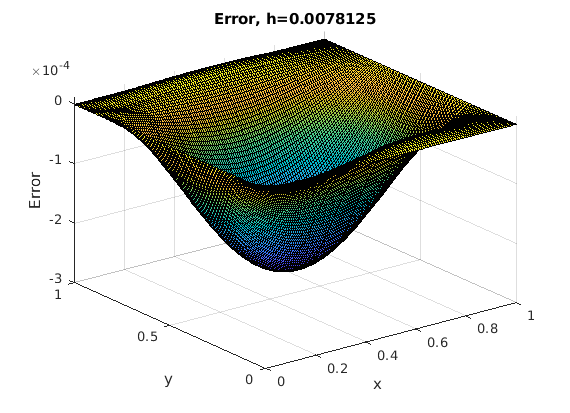

m = (2^7) - 1;
a=0; b=1;
h = (b-a)/(m+1);
w = 2/(1+sin(pi*h));
f = @(x,y) -5*pi^2*sin(pi*x).*cos(2*pi*y);
g = @(x,y) sin(pi*x).*cos(2*pi*y);
uexact = @(x,y) g(x,y);
tic
[u,x,y] = fd2poissonsor(f,g,a,b,m,w);
gedirect = toc;
fprintf('SOR take %d s\n',gedirect);
figure, set(gcf,'DefaultAxesFontSize',10,'PaperPosition', [0 0 3.5 3.5]),
surf(x,y,u), xlabel('x'), ylabel('y'), zlabel('u(x,y)'),
title(strcat('Numerical Solution to Poisson Equation, h=',num2str(h)));
figure, set(gcf,'DefaultAxesFontSize',10,'PaperPosition', [0 0 3.5 3.5]),
surf(x,y,u-uexact(x,y)),xlabel('x'),ylabel('y'), zlabel('Error'),
title(strcat('Error, h=',num2str(h)));
SOR take 1.730786e+00 s
